Assessment: Integumentary, HEENT (Head, Eyes, Ears, Nose & Throat) & Neuro
Starting the exam, the general survey, skin, head and face, the cranial nerves, and mental status.
Starting the exam
The physical assessment gives baseline data for the plan of care and catches changes in the client's condition.
| Technique | What it is | Order |
|---|---|---|
| Inspection | Looking (and smelling, listening) | Always first |
| Palpation | Touching for temperature, texture, masses, tenderness | Usually second |
| Percussion | Tapping to hear what's underneath | Usually third |
| Auscultation | Listening with a stethoscope | Usually last, except the abdomen |
Before you touch anyone
Initial assessment
- Hand hygiene and PPE (personal protective equipment) if needed
- Verify identity with the wristband, name, and DOB (date of birth)
- Ask about food and drug allergies
- LOC (level of consciousness) and how the client responds to your greeting
- Hygiene, grooming, dress (right for the season), odors
- BP (blood pressure) with the 2-step method
- Pulse and respirations: count for 30 seconds and multiply by 2; if irregular, count a full minute
- Oxygen saturation (SpO2): expect 95% or higher
- Verbalize your general survey findings in medical terms
General survey
- Alertness: person, place, time, situation
- Skin color, breathing effort, distress
- Body structure: height, weight, BMI (body mass index), posture
- Facial expression, mood or affect
- Hygiene, grooming, dress, odors
- Mobility aids
Stethoscope
- Diaphragm (firm pressure): high-pitched sounds; S1, S2, lung and bowel sounds
- Bell (light pressure, whole rim on the skin): low-pitched sounds; murmurs, bruits, S3, S4
- Always on bare skin
- Use both as needed
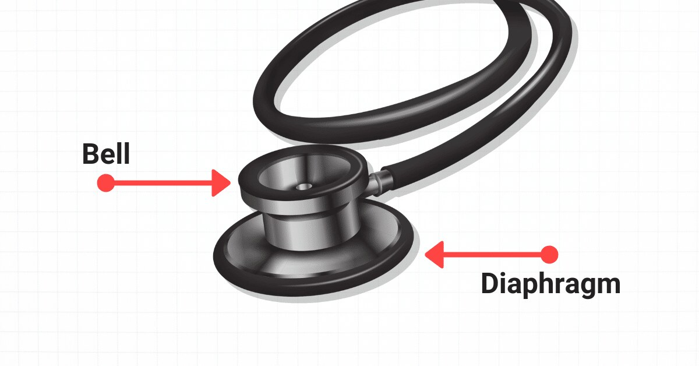
BMI: under 18.5 underweight, 25 or greater overweight, 30 or greater obese.
Culture: eye contact and facial expression vary between cultures. Get an interpreter for language barriers.
Skin, hair & nails
Inspect and palpate at the same time, head to toe, comparing sides.
Normal skin documentation: "Skin is clean, dry, and intact without wounds or lesions."
Head, face, and arms: inspect the head and scalp (color, hair distribution, wounds, lesions); skin color for cyanosis, jaundice, and erythema (check the palms on the arms); integrity, vascularity, rashes or moles; temperature with the back of the hand, texture, and moisture; turgor; and the nails' shape, color, condition, and capillary refill.
| Color | Means |
|---|---|
| Cyanosis (blue) | Hypoxia or impaired venous return: the priority |
| Jaundice (yellow) | Liver dysfunction or RBC (red blood cell) destruction (↑ bilirubin) |
| Erythema (red) | Inflammation, rash, fever, sun |
| Pallor (loss of color) | Anemia, shock, decreased blood flow |
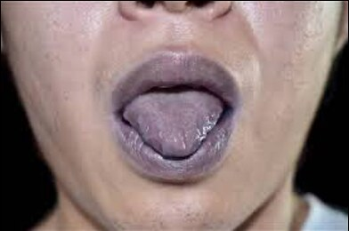
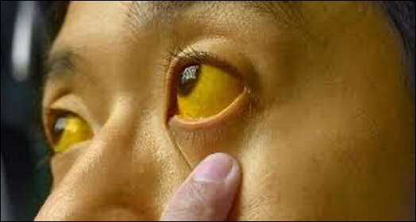
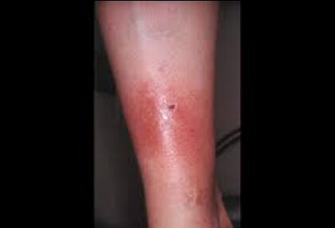
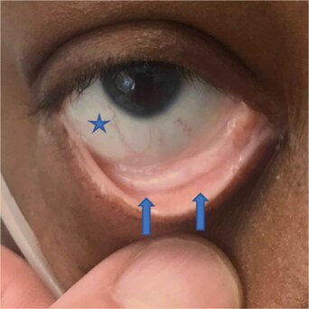
Temperature
- Back of the hand only; compare sides
- Cool or cold = decreased blood flow
- Warm or hot = inflammation or infection
Texture & moisture
- Expect smooth, soft, even, intact
- Thicker on palms and soles
- Moist in the axillae and skin folds only
- Look for diaphoresis, oiliness, dry flaking
- Older adults: drier, thinner skin
Turgor: pinch a skin fold over the clavicle, sternum, or back of the hand. Back to baseline within a few seconds = normal. Tenting for several seconds = dehydration.
Edema
Excess fluid in the tissues, most often the lower legs. Skin looks shiny and tight, and a fingerprint dent means edema is present.
Always compare with the matching limb.
- Bilateral = fluid volume excess or venous insufficiency
- Unilateral = inflammation, DVT (deep vein thrombosis), lymphedema
Edema grading
- 1+ = trace, 2 mm, rapid response
- 2+ = mild, 4 mm, 10–15 sec
- 3+ = moderate, 6 mm, prolonged
- 4+ = severe, 8 mm, prolonged
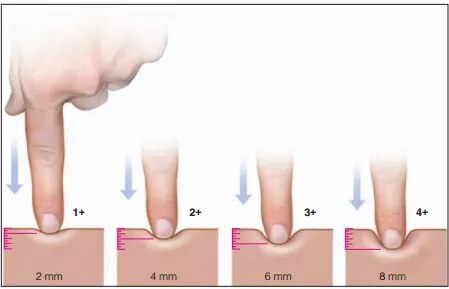
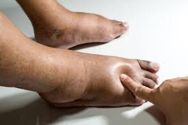
Lesions and wounds: measure length, width, depth, and describe distribution, shape, size, color, texture, location, characteristics, and exudate.
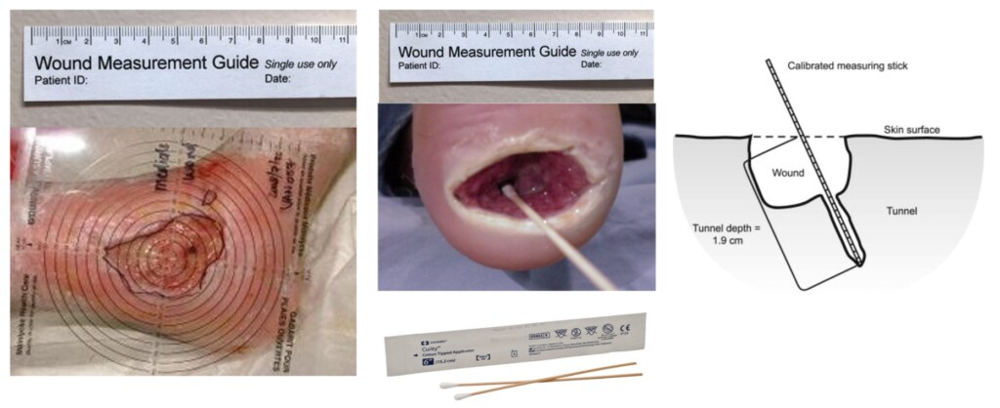
Nails: expect symmetric nail beds with uniform color. Abnormal: discoloration, curvature over 160°, clubbing (chronic low oxygen from heart or lung disease).
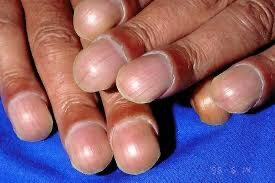
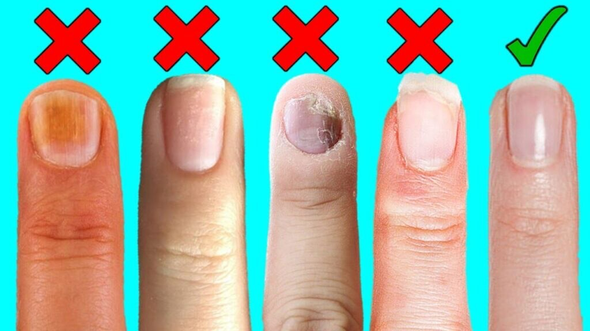
Hair: expect even distribution and symmetric growth or loss; postmenopausal thinning is common. Look for dry patches and infestations. Alopecia = hair loss. Hirsutism = hair on the face or chest in females.
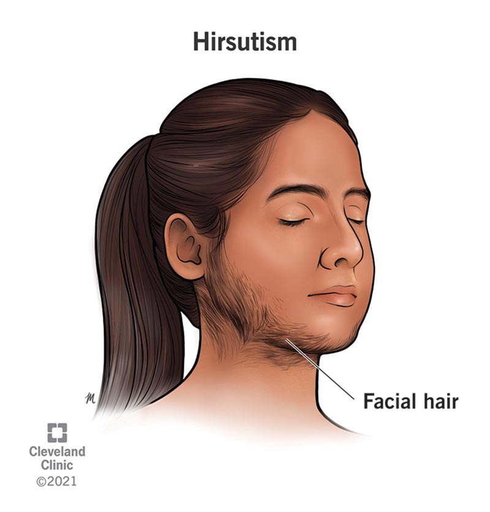
Primary lesions (from healthy skin)
- Macule: flat color change, <1 cm (freckle, petechiae)
- Papule: raised, solid, <1 cm (raised mole)
- Nodule: firm, deep, 1–2 cm (wart)
- Vesicle: serous fluid, <1 cm (blister, herpes simplex)
- Pustule: pus (acne)
- Tumor: solid mass >1–2 cm
- Wheal: edematous, irregular (insect bite)
- Atrophy: thin, shiny, translucent (arterial insufficiency)
Secondary lesions (change in a primary)
- Erosion: lost epidermis, moist (ruptured vesicle)
- Crust: dried blood, serum, or pus (scab)
- Scale: flaking (dandruff, psoriasis)
- Fissure: linear crack (tinea pedis)
- Ulcer: epidermis and dermis lost (pressure injury)
ABCDE for skin cancer: Asymmetry, Border irregularity, Color variation, Diameter >6 mm, Evolving.
Dark skin: look for color changes on the palms, soles, lips, nail beds, and oral mucosa. Palpate for warmth and firmness to find erythema.
Pressure: press any red area over a bony prominence. Nonblanchable redness means pressure damage.
Also: natural light is best, and ask clients to remove a wig or head covering. Turgor isn't reliable in older adults.
Skin aging: thin, dry, fragile, less elastic, wrinkled; thick, slow-growing nails; thinning hair; less oil and sweat; slow healing. Petechiae and hematomas are not expected with aging.
Head, face & neck
The skull, face, and facial expressions should be symmetric, with no bony deformities.
- Assess the surrounding skin and the hair
- Movements should be voluntary
- Neck muscles equal in height
- Neck range of motion: chin to chest, ear to shoulder, chin up, turn side to side
Lymph nodes: normally not palpable, tender, or visible. Feel with the index and middle finger pads in circles, comparing sides. Occipital = base of skull; postauricular = over the mastoid; tonsillar = angle of the jaw; submental = under the chin; anterior cervical = along the sternocleidomastoid.
Thyroid: a normal one isn't visible; it rises when the client swallows. A bruit over an enlarged thyroid suggests hyperthyroidism.
Eyes
Observe for glasses or contacts.
Expected
- Parallel eye movements
- Lids open and close completely and symmetrically
- No edema or redness
- Sclera white (light yellow in darker skin)
- Lens clear
Abnormal
- Loss of visual fields
- Asymmetric light reflex
- Periorbital edema
- Drainage
- Ptosis (drooping upper lid); exophthalmos (bulging eyes)
- PERRLA: shine a light into each pupil and note the response
- CN (cranial nerve) II: Snellen visual acuity
- CN III, IV, VI: six cardinal positions of gaze, head held still
PERRLA: Pupils Equal, Round, Reactive to Light, Accommodation (dilate far, constrict near).
Snellen (CN II): 20 ft away; test uncorrected first, then each eye and both. Use a picture or E chart if the client can't read English letters. 20/30 means the client sees at 20 ft what a normal eye sees at 30 ft.
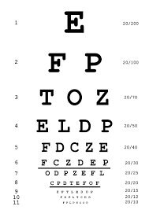
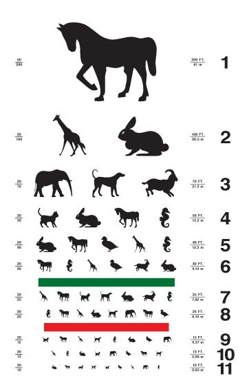
Six cardinal positions of gaze (CN III, IV, VI): the client follows your finger or pen with their eyes in a wide "H" without moving their head. Expect smooth, full movement.
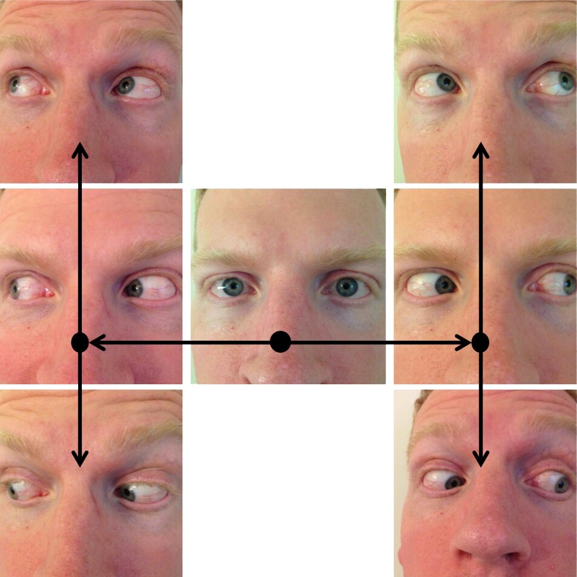
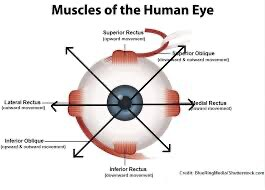
Eye aging: presbyopia (trouble seeing close up), glare intolerance, trouble telling colors apart, slower pupils, cataracts, and arcus senilis (gray-white ring around the cornea).
Other eye tests: Rosenbaum chart (14 in away) for near vision; Ishihara for color vision; cover/uncover test for strabismus; visual fields from 2 ft away; ophthalmoscope for the red reflex.
Ears
External
- Small amount of cerumen is normal
- Skin matches the face
- No lesions, tenderness, or deformities
- Look for excessive or smelly discharge
Internal
- Tympanic membrane pearly gray, intact, with a cone of light
- Red and bulging = middle ear infection
- Cerumen moist or dry, but not excessive
CN VIII: whisper test. The client covers one ear; whisper and have them repeat the words. Then test the other ear.
| Test | How | Expected |
|---|---|---|
| Whisper | Client covers one ear; whisper and have them repeat | Repeats the words. The main hearing test on the slides |
| Rinne | Tuning fork on the mastoid, then beside the ear canal | Air conduction lasts twice as long as bone (2:1) |
| Weber | Tuning fork on top of the head | Heard equally in both ears |
If Weber is louder in one ear: conductive loss is heard best in the bad ear; sensorineural loss is heard best in the good ear. Check for cerumen buildup before documenting hearing loss in an older adult.
Ear aging: hearing loss (presbycusis = high-frequency loss), cerumen buildup, thicker eardrums.
Otoscope: pull the adult auricle up and back and insert 1–1.5 cm without touching the canal.
Nose, mouth & throat
Nose: normal
- Septum midline
- Nares patent
- Mucosa light red and moist, no lesions
- Sinuses (frontal, maxillary) nontender
Nose: abnormal
- Pallor
- Inflammation
- Discharge or drainage
Mouth and throat anatomy: lips, gums, mucous membranes, tongue, teeth, hard palate, soft palate, uvula, tonsils.
Mouth: normal
- Pink and moist (more plum in darker skin)
- Teeth intact and shiny
- No lesions or wounds
- Clear speech; normal gag reflex
Mouth: abnormal
- Pallor, jaundice, cyanosis
- Missing teeth, dental caries
- Abnormal speech
- Dry, cracked lips; lesions
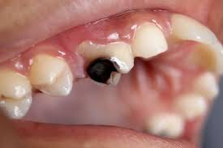
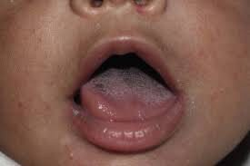
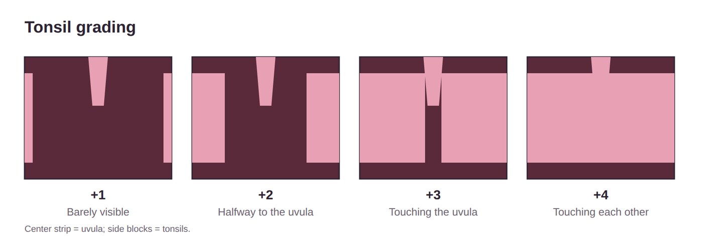
Tonsil grades
- +1 = barely visible
- +2 = halfway to the uvula
- +3 = touching the uvula
- +4 = touching each other
Mouth and nose aging: less taste and smell, tooth loss, pale gums, darker teeth, less saliva; voice pitch rises.
Cranial nerves
Know all 12: name, sensory/motor/both, and how to test each one.
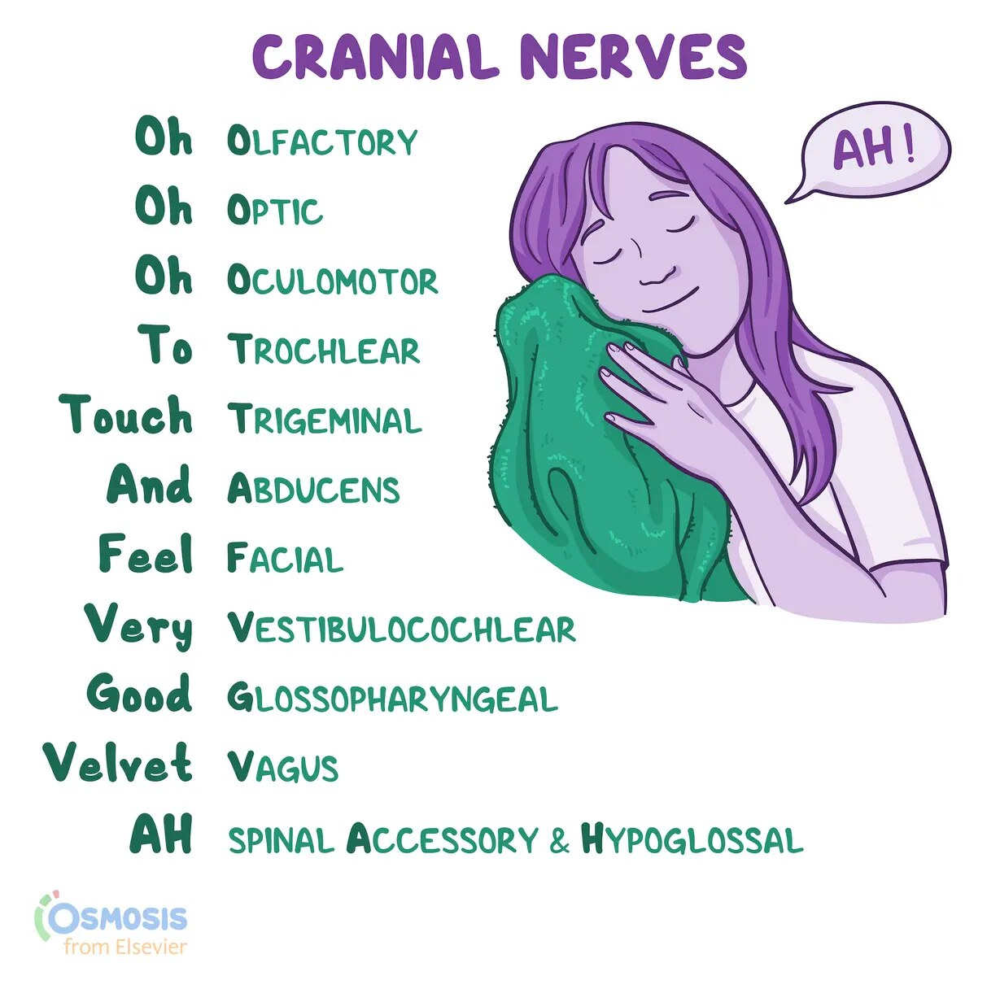
"Oh Oh Oh To Touch And Feel Very Good Velvet, AH": Olfactory, Optic, Oculomotor, Trochlear, Trigeminal, Abducens, Facial, Vestibulocochlear (auditory), Glossopharyngeal, Vagus, Accessory, Hypoglossal.
| CN | Type | How to test |
|---|---|---|
| I Olfactory | Sensory | Check nares patency; eyes closed, one nostril blocked, identify a scent (mint, coffee, toothpaste); not alcohol |
| II Optic | Sensory | Snellen, uncorrected first |
| III, IV, VI | Motor | Six cardinal positions of gaze, head still (III also = PERRLA) |
| V Trigeminal | Both | Eyes closed; cotton swab on both sides of the forehead, cheeks, and chin |
| VII Facial | Both | Smile and move the eyebrows (slides add: puff cheeks, frown, show teeth) |
| VIII Auditory | Sensory | Whisper test |
| IX, X | Both | Say "Ah" with a tongue blade; watch the soft palate and uvula rise; swallow |
| XI Spinal accessory | Motor | Shrug shoulders against resistance; turn head side to side |
| XII Hypoglossal | Motor | Stick out the tongue; push it against the inside of each cheek |
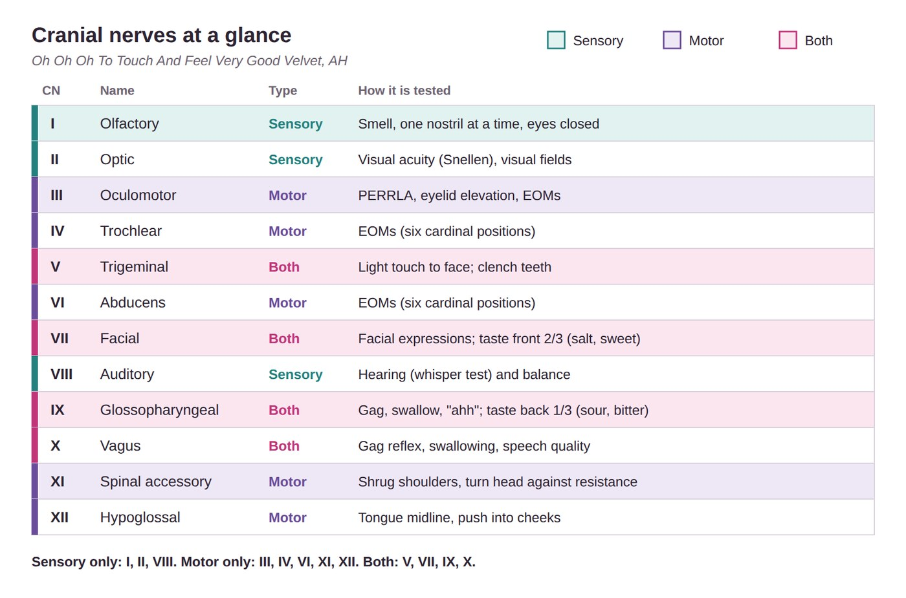
Sensory only: I, II, VIII (smell, see, hear). Both: V, VII, IX, X. Everything else is motor only.
Use an alcohol wipe to test smell. It stimulates CN V and gives a false response.
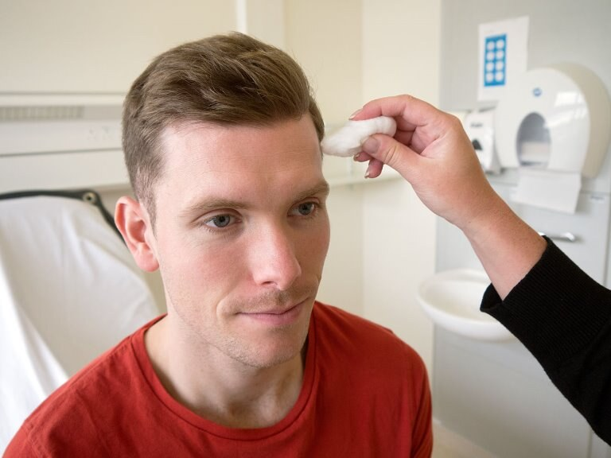
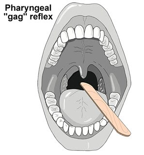
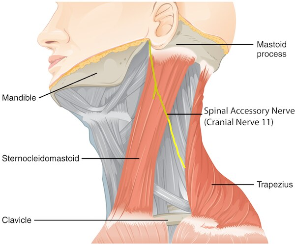
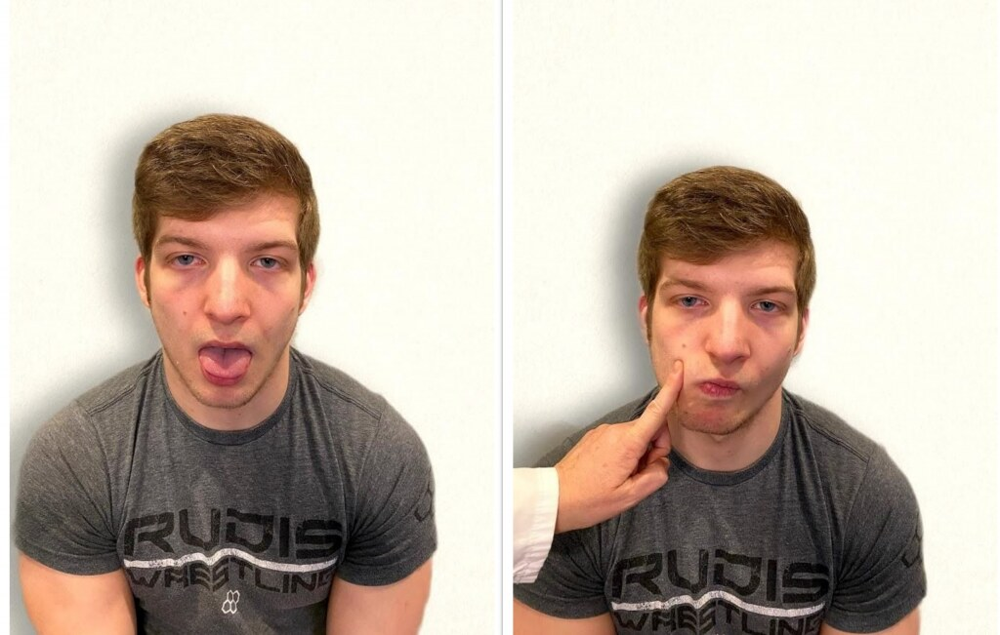
Taste: CN VII = front of the tongue (salt, sweet); CN IX = back (sour, bitter). Swallowing = CN IX and X. CN V motor: clench the teeth while you feel the jaw muscles.
Mental status & level of consciousness
Orientation (A&O × 4, alert and oriented): person, place, time, and situation. Ask: Who are you? Where are you? What day or time is it? Why are you here? Then verbalize your neuro findings.
| Level of consciousness | What you see |
|---|---|
| Alert | Eyes open, responsive, answers spontaneously |
| Lethargic | Opens eyes and answers when prompted, but drifts back to sleep |
| Obtunded | Responds to light shaking; may be confused; slow |
| Stuporous | Needs painful stimuli; may not respond verbally |
| Comatose | No response to repeated painful stimuli |
Glasgow Coma Scale: scores eye opening, verbal response, and motor response. Minimum 3, maximum 15. The bigger the number, the better.
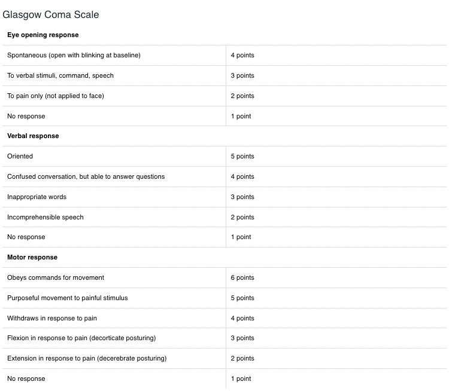
Decorticate posturing
- Arms and legs flexed and turned in
Decerebrate posturing
- Neck and elbows extended, wrists and fingers flexed
Neuro aging: short-term memory decline, slower reflexes and reaction time, decreased senses, poorer balance.
Cognition: recent memory (repeat 3 words), remote memory (birth date), calculation (100 minus 7s), abstract thinking (explain a cliché), judgment ("locked your keys in the car?").
Sensory tests (eyes closed): sharp/dull, hot/cold, cotton, vibration, position, stereognosis (key in hand), graphesthesia (number on palm).
Reflexes: graded 0–4+, with 2+ expected. Biceps → elbow flexes; triceps → elbow extends; patellar → leg extends; Achilles → foot plantar flexes. Abnormal adult Babinski = toes fan out.
Quick check
Which skin color finding is the priority?
Cyanosis. It signals hypoxia.
Which part of your hand checks skin temperature?
The back (dorsal side) only.
How do you test CN I?
Check nares patency, then the client closes their eyes, blocks one nostril, and names a non-alcohol scent. Repeat on the other side.
Which cranial nerves are sensory only?
I, II, and VIII.
How do you count the pulse during the initial assessment?
Count for 30 seconds and multiply by 2, unless it's irregular. Then count a full minute.
Assessment: Thorax, Cardiovascular, Abdomen & Musculoskeletal
The chest and lungs, heart and pulses, abdomen, and bones and muscles: where to put your stethoscope and hands, and what you should find.
Thorax & lungs
Use all four techniques: inspection, palpation, percussion, auscultation.
Landmarks: midsternal, midclavicular, midaxillary, and vertebral lines. Percuss and auscultate over the intercostal spaces, side to side.
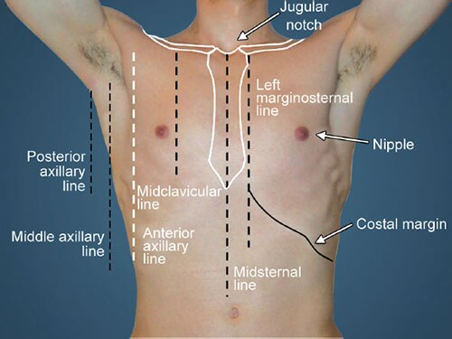
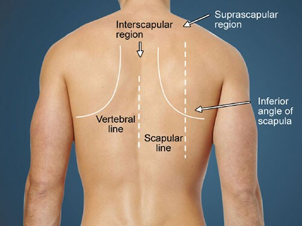
Anterior chest
- Inspect shape, symmetry, skin, bones, musculature
- Inspect tracheal alignment and JVD (jugular venous distention)
- Palpate for bulges, tenderness, abnormal temperature
- Auscultate the trachea
- Auscultate the anterior chest at least 6 places
- Verbalize breathing pattern, rate, rhythm, and the normal and adventitious sounds
Posterior chest
- Inspect shape, symmetry, skin, bones, musculature
- Palpate the spine and posterior thorax
- Check thoracic expansion (excursion)
- Client takes slow deep breaths through the mouth
- Auscultate in a zigzag, at least 8 places, a full inspiration and expiration each
- Have the client bend forward; inspect spinal curvature
Inspection
- Effortless, quiet, symmetric
- RR (respiratory rate) 12–20; check depth and regularity
- No dyspnea sitting, lying, or standing
- Trachea midline
- No deformities of ribs, sternum, scapula, or spine
Increased work of breathing
- Accessory neck or intercostal muscles helping
- Retractions (skin pulls in between the ribs)
- Sitting up or leaning forward to breathe
Palpation
- Tenderness, lumps, bumps, deformities
- Chest excursion: thumbs move apart evenly on a deep breath
- Tactile fremitus (client says "99"): should be symmetric; increased = pneumonia; decreased = pneumothorax
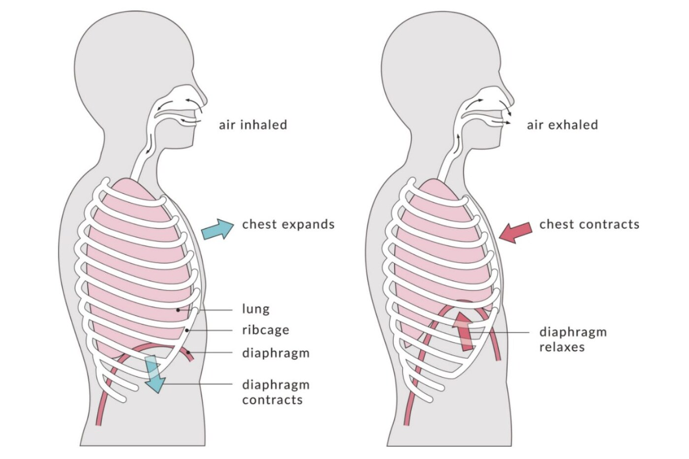
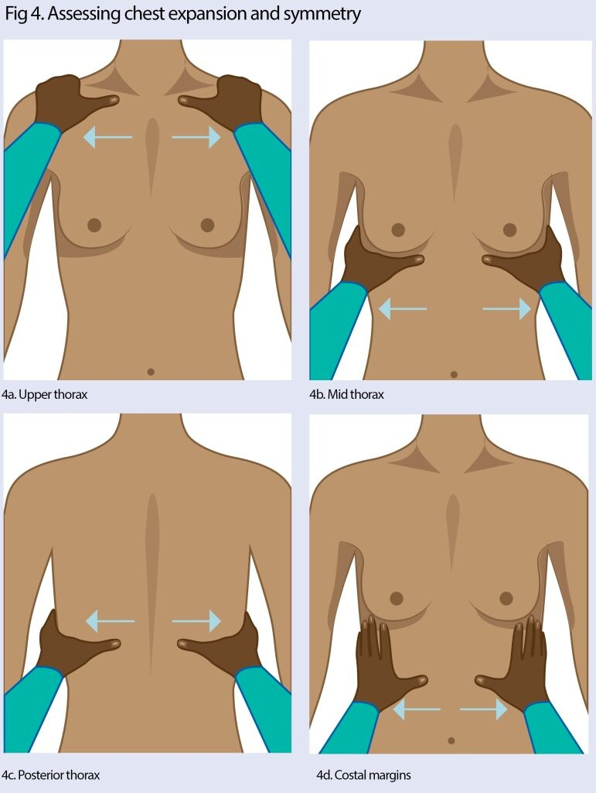
| Percussion | Means |
|---|---|
| Resonance | Expected, symmetric side to side |
| Dullness | Fluid, solid tissue, mass, pneumonia |
| Hyperresonance | Trapped air: emphysema or pneumothorax |
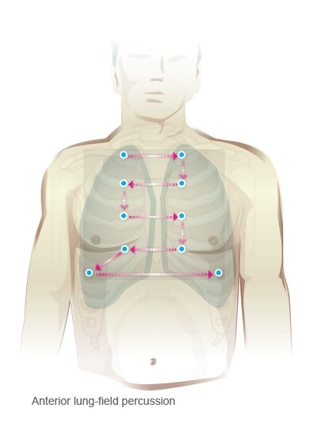
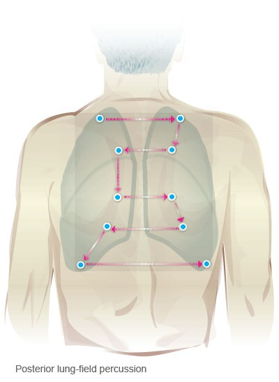
Auscultation
Stethoscope on bare skin, quiet room, client doesn't talk. Tell the client: "Take deep breaths with your mouth open each time I move my stethoscope."
| Normal sound | Where | Sounds like |
|---|---|---|
| Bronchial (tubular) | Over the trachea | Loud, high-pitched, hollow |
| Bronchovesicular | Over the main bronchi, front and back | Medium-pitched, blowing; inspiration and expiration equal |
| Vesicular | Peripheral lung, toward the bases | Soft, fine, breezy |
| Adventitious | Sounds like | Cause |
|---|---|---|
| Diminished | Hard to hear | Adipose tissue, atelectasis, pleural effusion, pneumonia |
| Atelectasis | No sounds at the lower lobe bases | Hypoventilation, secretions, fluid or air |
| Crackles (rales) | Wet popping | Air through fluid or collapsed alveoli opening; fluid overload |
| Wheezes | High-pitched; may be only on expiration | Airway constriction: asthma, mucus |
| Rhonchi (gurgles) | Low-pitched wheeze; clears with coughing | Mucus in large airways |
| Stridor | High-pitched crowing | Large airway blocked: emergency |
| Friction rub | Scratching or squeaking; doesn't clear | Inflamed pleura |
Crackles Can't Clear, Rhonchi Run off with a cough. Hear rumbling? Have the client cough and listen again.
Anatomy: the right lung has 3 lobes (listen to the middle lobe at the axilla); the left has 2. Other landmarks: anterior and posterior axillary lines and scapular lines.
Chest shape: AP (anteroposterior) diameter is a third to half the side-to-side width. Barrel chest (AP equals width) comes with aging and COPD (chronic obstructive pulmonary disease).
Lung aging: barrel chest, less expansion, weaker cough, slower cilia, higher infection risk, kyphosis.
Breast exam: self-exam monthly, 4–7 days after the period starts. Palpate with the pads of three fingers in a circular, wedge, or vertical strip pattern. Report peau d'orange (orange-peel skin), recent nipple inversion, dimpling, or one-sided dilated veins.
Heart
Auscultation landmarks: know all five sites and what S1 and S2 are.
| Site | Location |
|---|---|
| Aortic | Right 2nd ICS (intercostal space), right sternal border |
| Pulmonic | Left 2nd ICS, left sternal border |
| Erb's point | 3rd ICS, left sternal border; auscultate only |
| Tricuspid | Left 4th ICS, left sternal border |
| Mitral | 5th ICS, midclavicular line (PMI: point of maximal impulse) |
Use the bell and diaphragm as needed. Listen for a carotid bruit; if you hear one, palpate for a thrill. Then verbalize your respiratory and cardiovascular findings.
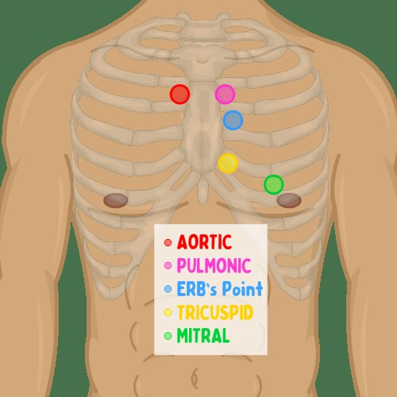
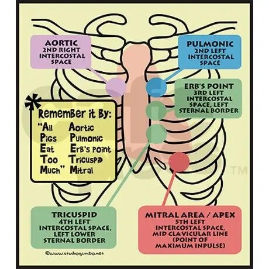
APETM, "All Pigs Eat Too Much" (slides: "APE To Man"): Aortic, Pulmonic, Erb's point, Tricuspid, Mitral, top to bottom.
The competency checklist lists the tricuspid area as 4th/5th ICS. This guide uses 4th ICS, as ATI and the slides do.
| Sound | What it is |
|---|---|
| S1 "lub" | Mitral and tricuspid close (contraction); loudest at the apex |
| S2 "dub" | Aortic and pulmonic close (relaxation); loudest at the base |
| S3 | "Ventricular gallop" after S2; associated with CHF (congestive heart failure); bell |
| S4 | "Atrial gallop" just before S1; associated with HTN (hypertension), CAD (coronary artery disease), MI (myocardial infarction); bell |
| Murmur | Blowing or swishing; systolic follow S1, diastolic follow S2 |
| Pericardial friction rub | High-pitched scratch through systole and diastole; best at the PMI |
| Dysrhythmia | Heart doesn't beat at regular intervals |
The slides place S4 "immediately after S1." Both ATI sources place it just before S1, and this guide follows ATI.
Abnormal findings
- Bruit: blowing or swishing from blocked blood flow; bell
- Thrill: palpable vibration, often with a murmur
- JVD: blood backing up from the right atrium; right-sided heart failure
- Heaves or lifts: visible chest wall rise at the left sternal border or PMI = heart failure
Bruits you hear, thrills you feel.
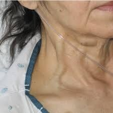
Bruit sites (bell): carotid arteries, abdominal aorta, renal arteries, iliac arteries, femoral arteries.
Murmur grades
- 1 = hard to hear, even in a quiet room
- 2 = clearly audible but quiet
- 3 = moderately loud
- 4 = loud, with a thrill
- 5 = very loud, easy-to-feel thrill
- 6 = heard without touching the chest; visible thrill
Pulse deficit
- Radial pulse slower than apical
- Two nurses count apical and radial at the same time for 60 sec
- A difference of 2 or more = deficit; report it
Technique tips: find the 2nd ICS from the angle of Louis (where the manubrium meets the sternum). Listen sitting forward, supine, and on the left side (best for extra sounds). Check JVD with the head of the bed at 30–45°. The PMI is no bigger than a nickel.
Cardiovascular aging: higher systolic BP, stiffer vessels and valves, lower cardiac output, harder-to-feel PMI.
Peripheral vascular
Pulse sites: temporal, carotid, apical, brachial, radial, femoral, popliteal, dorsalis pedis (pedal), posterior tibial.
- Head and neck: temporal, carotid (one side at a time)
- Arms: brachial, radial
- Legs: femoral (verbalize), popliteal, pedal, posterior tibial; check every site
- Inspect legs and feet: color, hair, nails, edema, muscle mass, varicose veins, lesions
- Capillary refill on fingers and toes
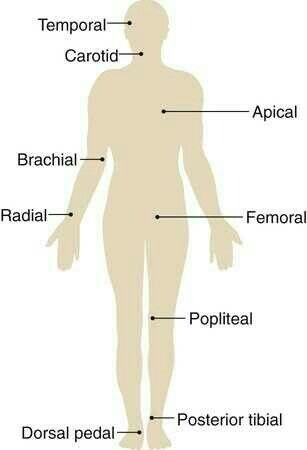
| Pulse | Where |
|---|---|
| Temporal | In front of the ear, over the temple |
| Carotid | Beside the trachea, inside the sternocleidomastoid |
| Brachial | Antecubital fossa |
| Radial | Thumb side of the wrist |
| Femoral | Groin, between the pubic bone and the hip bone |
| Popliteal | Deep behind the knee |
| Dorsalis pedis | Top of the foot |
| Posterior tibial | Behind and below the inner ankle bone |
Grading: 0 absent (try a Doppler), 1+ diminished (weak and thready), 2+ brisk (normal), 3+ increased, 4+ bounding.
Press both carotids at the same time. It can drop the heart rate and BP, and the client can pass out.
Capillary refill: press the nail bed until it blanches, then release. Color should return in under 3 seconds. It can be slower in older adults.
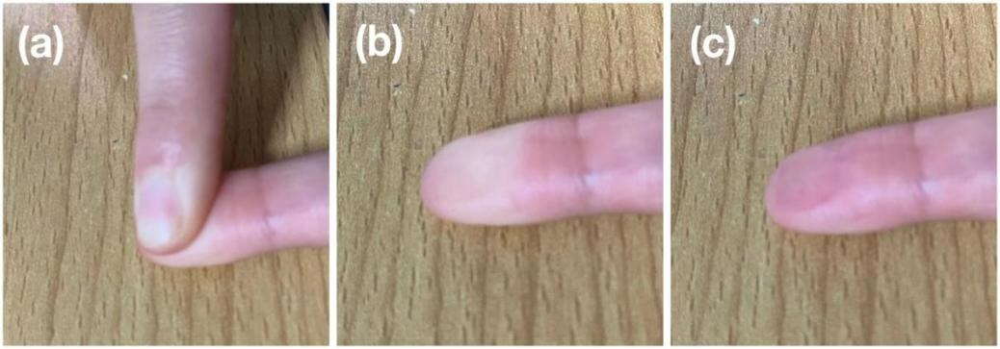
Peripheral vascular abnormalities: know these on sight.
| Finding | Looks like |
|---|---|
| Spider angioma | Red center with red legs, up to 2 cm |
| Cherry angioma | Red, 1–3 cm, may be raised |
| Spider veins | Bluish, spider-shaped |
| Petechiae | Deep red-purple, flat |
| Ecchymosis | Purple fading to green or yellow; variable size |
| Hematoma | Raised ecchymosis |
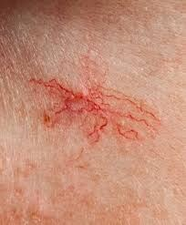
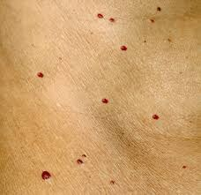
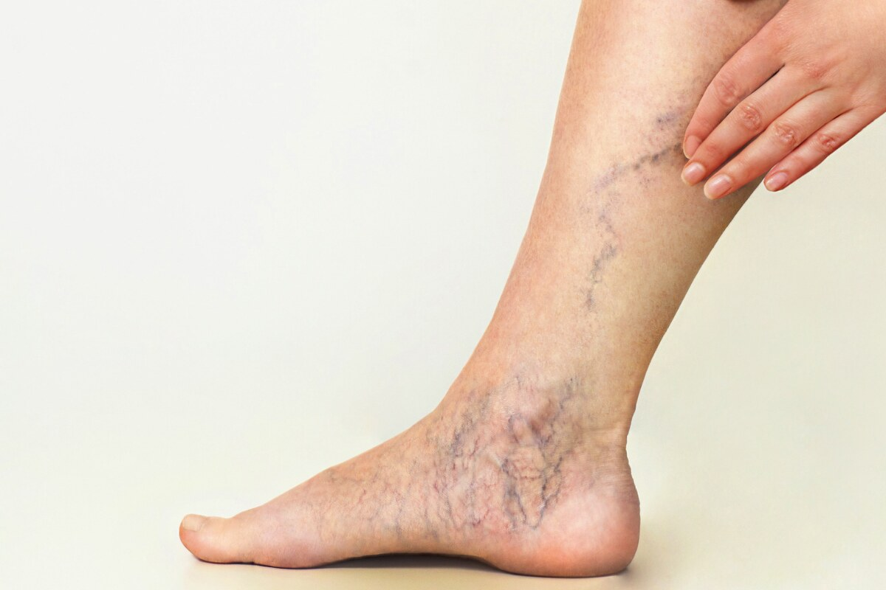
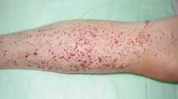
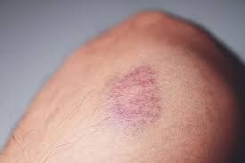
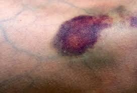
Arterial insufficiency
- Shiny, translucent, hairless skin on the feet and toes
- Hair loss below midcalf
Venous insufficiency
- Brown skin discoloration
- Leg edema
Compare pulses on both sides at the same time (never the carotids). Purpura = petechiae larger than 3 mm.
Abdomen
Order is different here: inspect, auscultate, percuss, then palpate. Touching first changes bowel sounds.
- Inspect: color, contour, pulsations, umbilicus, surface characteristics
- Bowel sounds: diaphragm, RLQ (right lower quadrant) → RUQ (right upper) → LUQ (left upper) → LLQ (left lower)
- Normoactive 5–35/min; hypoactive <5; hyperactive >35; absent = no sounds after at least 5 min
- Bruits with the bell: aorta, renal, iliac, femoral (verbalize femoral)
- Percuss RLQ → RUQ → LUQ → LLQ: tympany over bowel, dullness over organs or a mass
- Light palpation about 1 cm (0.4 in) to 1.3 cm (0.5 in) deep for tenderness
- Verbalize abdominal findings
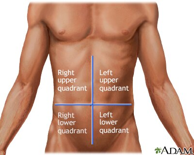
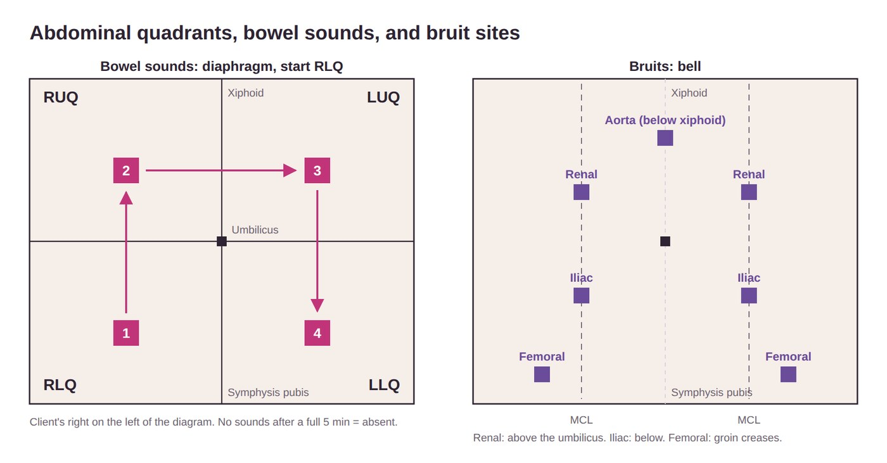
Inspect
- Skin: lesions, scars, dilated veins
- Jaundice, cyanosis, ascites
- Contour: flat, convex, concave, distended
- Midline pulsations above the umbilicus are expected in thin adults
Distention
- Fat: rolls along the sides
- Fluid: flanks bulge and shift with turning
- Flatus: midline bulge only
- Hernia: bulges when muscles tighten
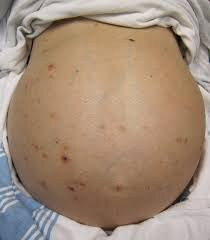
| Bowel sounds | Means |
|---|---|
| High-pitched clicks and gurgles, 5–35/min | Expected |
| Borborygmi (loud growling) | Hyperperistalsis: unexpected |
| Hyperactive | Diarrhea, anxiety, bowel inflammation |
| Hypoactive | Medications, anesthesia, constipation, obstruction |
| Absent | None after at least 5 minutes |
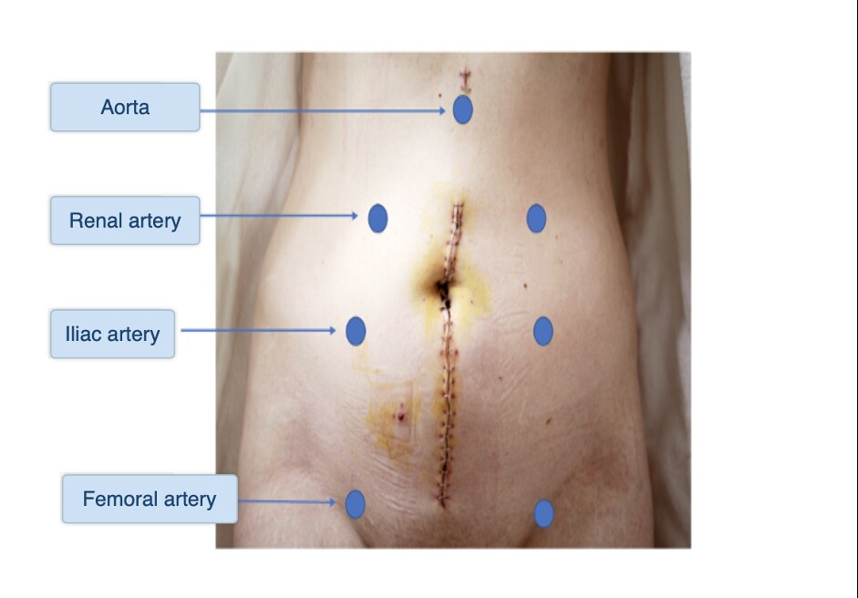
Percussion: tympany over most of the abdomen; dullness over a full bladder, the liver, or the spleen.
Palpate
- Light: finger pads of one hand, about 1–1.3 cm (0.4–0.5 in) deep
- Deep: advanced practice providers only
- Expected: no pain, soft; bladder felt only if full
- Abnormal: distention, rigidity, rebound tenderness
- A rigid abdomen that stays hard when the client relaxes, especially with absent bowel sounds, points to peritoneal irritation. Voluntary guarding (an anxious client tensing up) relaxes when they exhale
ATI and the competency checklist say about 1 cm (0.4 in); the slides say 0.5 in (1.3 cm). Both are listed.
Setup: have the client void first, then lie supine with knees slightly bent. Silver striae are expected.
Rebound tenderness: press firmly, then release; pain on release = peritoneal irritation. Found tenderness? Stop palpating and notify the provider.
Deep palpate a mass, a tender area, or an incision.
Abdominal aging: rounder belly, weaker muscles; peritonitis is harder to spot (less pain, guarding, and fever).
Also: liver span is 6–12 cm. CVA (costovertebral angle) tenderness (fist percussion over the back) = kidney inflammation.
Musculoskeletal
Assess: gait, alignment, symmetry, muscle tone, range of motion, involuntary movements, signs of inflammation, gross deformities, height, posture, spine.
Arms
- Inspect and palpate hands, fingers, wrists, elbows
- Bend and straighten the elbows; flex and extend wrists and hands
- Arms forward; palms up and down against resistance
- Flex the upper arm against resistance
- Squeeze your index and middle fingers
Legs
- Hip abduction and adduction, knee straight; right, then left
- Raise the thigh; push up and down against resistance; right, then left
- Dorsiflex and plantar flex both feet against resistance
Standing, gait & balance
- Assist as needed; feet together, eyes open
- Romberg: eyes closed, stand still 20 seconds
- Regular gait, walk on toes, walk on heels, heel-to-toe
- Verbalize musculoskeletal findings
Range of motion
Know every ROM (range of motion) term.
| Movement | Meaning |
|---|---|
| Flexion | Decreases the joint angle |
| Extension | Increases the joint angle |
| Hyperextension | Beyond normal extension |
| Abduction | Away from midline |
| Adduction | Toward midline |
| Supination | Palm or front surface up |
| Pronation | Palm or front surface down |
| Dorsiflexion | Foot and toes up |
| Plantar flexion | Foot and toes down |
| Eversion | Turned away from midline |
| Inversion | Turned toward midline |
| Internal rotation | Rotated inward |
| External rotation | Rotated outward |
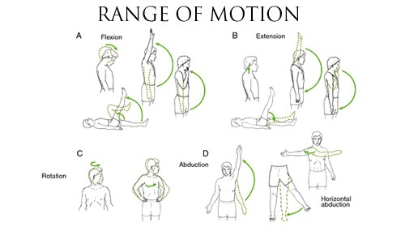
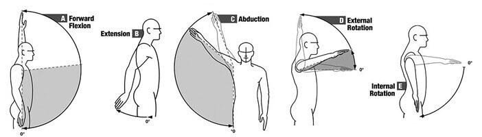
ADDuction ADDs the limb back to the body.
Muscle strength
Graded 0 to 5. Test the shoulder, elbow, and wrist (flex and extend against resistance), grip strength, and ROM.
| Grade | Means |
|---|---|
| 0 | No contraction |
| 1 | Trace contraction |
| 2 | Moves with gravity eliminated |
| 3 | Moves against gravity |
| 4 | Moves against some resistance |
| 5 | Full strength (expected) |
Hypertrophy = enlarged from strengthening. Atrophy = shrunken from disuse; soft and boggy.
Spine: have the client bend forward and look for curves. Expected is a double S. Kyphosis = exaggerated thoracic curve (older adults). Lordosis = exaggerated lumbar curve (pregnancy). Scoliosis = sideways curve.
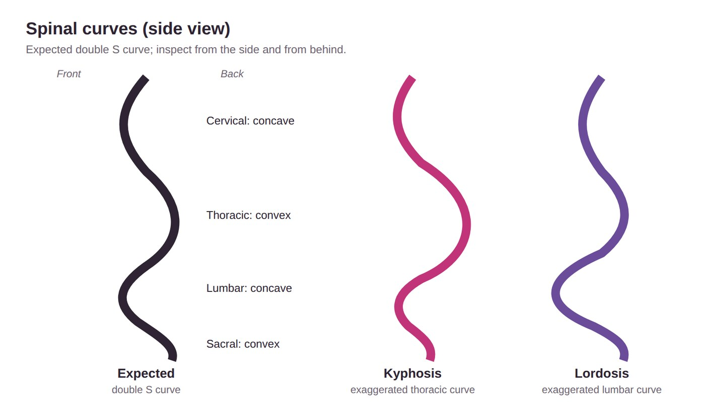
| Balance test | How | Expected |
|---|---|---|
| Romberg | Feet together, arms at sides, eyes closed | Minimal sway for 20 seconds. Sways more than a couple of inches? Stop and document |
| Heel-to-toe walk | Heel in front of toes in a straight line | Walks straight without losing balance |
The slides and ATI say at least 5 seconds. This guide uses 20 seconds, as the competency checklist does.
Passive ROM
- You move the client's joints
- Never past pain or resistance
Active ROM
- The client repeats the movements you demonstrate
Get-up-and-go test: time the client rising from a chair without using the arms, walking 3 m (10 ft), turning, returning, and sitting. Assistive devices are OK.
Musculoskeletal aging: less muscle and bone, height loss, joint changes, limited ROM, kyphosis, wider stance.
Quick check
How many places do you auscultate the anterior and posterior chest?
At least 6 anterior and at least 8 posterior, in a zigzag, a full breath at each.
Low-pitched rumbling over the large airways. What next?
Have the client cough, then listen again. Rhonchi may clear.
Where is Erb's point?
3rd intercostal space, left sternal border. Auscultate only.
What order do you listen for bowel sounds?
RLQ → RUQ → LUQ → LLQ, with the diaphragm.
You hear a carotid bruit. What do you do next?
Palpate for a thrill (one carotid at a time).
Safety
The national safety goals, how errors get reported, preventing falls, using restraints, seizure and fire response, and safety at home.
National Performance Goals
The Joint Commission (JC) reviews safety every year and accredits facilities that meet its goals. NPGs (National Performance Goals; 14 goals) apply to hospitals; NPSGs (National Patient Safety Goals) apply to other settings, such as ambulatory care and assisted living.
Client identification
- At least two identifiers: name, DOB, MRN (medical record number), phone number
- Ask open-ended ("What's your name and date of birth?"), then check the band or EMR (electronic medical record)
- Never use the room number: rooms change
- Never skip barcode scanning
- Same-name clients: follow the same-name alert policy, add identifiers
Critical results
- Outside the expected range and possibly life-threatening (Ex: sodium 120 mEq/L)
- Give them directly to the provider, in person or by phone
- Never by voicemail
- Document who reported and who received
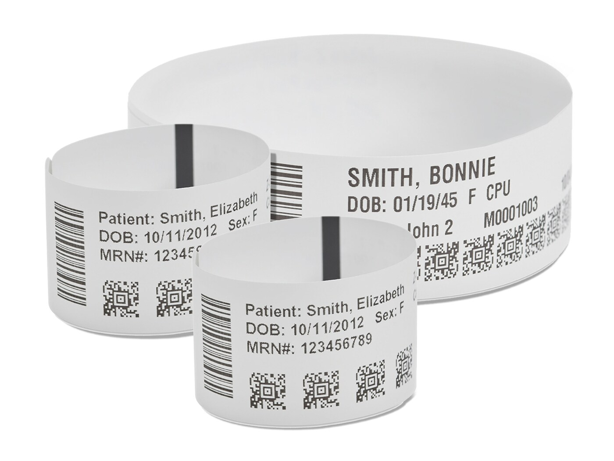
Alarm safety: constant nuisance alarms cause alarm fatigue, so staff respond slower. Don't ignore or silence alarms, prioritize them, and report broken equipment right away. ICUs (intensive care units) are the loudest.
Before surgery: two identifiers, mark the site, and a time-out (everyone pauses). The client states the procedure and points to the site; verify consent. The surgeon or another clinician marks the site when there's more than one possible side. No marking for bilateral organs (tonsils, ovaries); mouth, teeth, or perineum need a signed waiver.
Medication safety
- Label every medication in a procedure; discard anything unlabeled
- Anticoagulants (warfarin, heparin, enoxaparin): monitor weight, renal and liver labs, dose, and interactions
- Medication reconciliation: compare home meds with new orders at admission, transfer, discharge, and provider changes
Infection prevention
- Hand hygiene is the single most important step
- 4 HAIs (health care–associated infections): CLABSI (central line–associated bloodstream infection), CAUTI (catheter-associated urinary tract infection), SSI (surgical site infection), VAP (ventilator-associated pneumonia)
- MDROs (multidrug-resistant organisms): MRSA (methicillin-resistant Staphylococcus aureus), VRE (vancomycin-resistant Enterococcus), C. diff (Clostridioides difficile)
Other goals: pain plans use nonopioid and nonpharmacological options first; informed consent covers the treatment, benefits, risks, side effects, and alternatives, in a way the client understands; screen and report maltreatment; staff for 24-hr care; safe imaging, transplant, and waived (point-of-care) testing.
Suicide prevention: screen clients, and a positive screen always gets a follow-up (Is there a plan? For how long? Any self-injury?).
The slides say all admissions are screened. ATI specifies all clients 12 and older whose primary admitting diagnosis is behavioral health, using a validated tool.
Leave a client alone who has active suicidal thoughts or a plan. They need continuous observation and a room cleared of harmful items.
Equity: JC's goal is care free of discrimination. Assess social needs (transportation, literacy, housing, food) and provide interpreters. The Speak Up initiative encourages clients to report concerns.
Culture of safety & communication
To Err Is Human (1999) made a culture of safety a priority: open communication, confidential reporting, and reporting near misses too. Transforming Care at the Bedside aims for 70% of nurse time at the bedside, plus leadership training, rapid response teams, and standard communication tools.
Hourly rounding: check toileting, position, pain, side rails, bed height, and call light every hour. It reduces falls.
Rapid response team (RRT)
Brings critical care skills to the bedside. Call for:
- Sudden vital sign changes
- Low SpO2 despite oxygen
- Chest pain despite nitroglycerin
- Seizure
- Sudden mental status change
- Any staff concern
Not for: a single high blood glucose.
ATI lists the RRT as an ICU nurse, respiratory therapist, and critical care provider. The slides add lab and pharmacy.
ISBARR: Identity, Situation, Background, Assessment, Recommendation, Read back. Read back means repeating the order to the provider to confirm it.
| ISBARR | What to say |
|---|---|
| Identity | Who you are and where you're calling from |
| Situation | Client name, age, diagnosis, the concern |
| Background | History, medications, advance directives |
| Assessment | Your impression, findings, vital signs, labs |
| Recommendation | Treatment given and response; what you need |
| Read back | Repeat the order back |
Handoff report happens at the bedside, written or verbal.
Unexpected events & reporting
| Event | Definition | Example |
|---|---|---|
| Near miss | Error caught before it reached the client | Celebrex ordered as Celexa, caught at reconciliation |
| Client safety event | Unexpected event that could have caused harm | NPO (nothing by mouth) client eats a tray; procedure delayed |
| Adverse event | Unexpected harm | Client falls and sprains a wrist |
| Sentinel event ("never event") | Death, permanent harm, or severe temporary harm | Wrong-site surgery |
Common sentinel events: falls with serious injury, wrong-site surgery, retained objects, suicide in the facility, infant abduction. An expected death from illness is not a sentinel event.
After an incident
Occurrence reports aren't punitive. They track trends and root causes. Report falls, unexpected drug or vaccine reactions, wrong medications, lost property, body fluid exposures, and actions against policy.
Workplace safety
- Bullying: repeated harassment or isolation; fix it with a respectful, communication-focused culture and strong leadership
- Violence (Occupational Safety and Health Administration, OSHA): any act or threat of violence or intimidation at work; highest in behavioral health, long-term care, and the ED (emergency department)
- Report to a supervisor or HR (human resources); zero tolerance
- OSHA retaliation complaints within 30 days
Warning signs in a coworker
- Unexplained absences, declining work
- Constant complaints, policy abuse
- Mood swings, substance use
- Outbursts at criticism, paranoia
Fatigue: under 4 hours of sleep in 24 makes a car crash 11.5 times more likely.
Falls
A fall is an unplanned descent to the floor, with or without injury. It's the main safety risk for older adults (1 in 4 fall each year), and Medicare and Medicaid don't pay for fall injuries.
Physical risks
- Stroke, amputation, recent surgery, MS (multiple sclerosis)
- Vision problems, weakness, unsteady gait, assistive devices
- Chronic pain, malnutrition
- Incontinence or frequent toileting
- Orthostatic hypotension
Cognitive & other risks
- Confusion, dementia, impulsiveness, depression, sleep disorders
- Clutter, poor lighting, slippery floors
- History of falls; age
- Meds: antidepressants, antihypertensives, anticonvulsants, sedatives
The priority for any client with a fall history is a fall-risk assessment first.
Do it at admission, regularly, with any change in condition, on transfer, and after a fall.
Morse Fall Scale factors: history of falling, secondary diagnosis, ambulatory aid, IV (intravenous) access, gait, mental status.
Universal fall precautions
- Nonskid footwear
- Bed low and locked; wheelchair brakes on
- No clutter; good lighting
- Call light and belongings in reach (client does a return demonstration)
- Orient to the room and call light
- Answer call lights quickly; hourly rounding
Higher-risk clients
- Room near the nurses' station
- Color-coded wristband or room sign
- Bed or chair alarms
- Video monitoring or a sitter
- Regular toileting, gait belts
- Orthostatic hypotension: sit a few seconds, stand a few seconds, then walk
Side rails: keep them up for sedated, unconscious, or compromised clients. For a client who tries to get up alone, all four rails up is a restraint and invites climbing over. Two upper rails prevent rolling out while still letting the client exit.
Hospital-acquired injuries: HAIs, burns or shocks, transfusion reactions, falls, unsafe insulin use, DVT, and pressure injuries. Clients with communication disabilities have 3 times more adverse events.
Restraints
Restraints protect the client or others. They are a last resort, for the shortest time possible, and never for staff convenience, punishment, or short staffing.
Try first
Indications: pulling at tubes, IVs, catheters, or drains; unsafe movement; aggression; danger to self or others, once alternatives fail.
| Type | What it is |
|---|---|
| Mechanical | Devices on the wrists or ankles. Least restrictive are soft restraints: hand mitt, then soft wrist or elbow. Most restrictive: four-point |
| Physical | Manually holding the client, short-term (like for an injection) |
| Chemical | Medications to control behavior (benzodiazepines, antipsychotics) |
| Barrier | Lapboard, bed enclosure, all 4 side rails |
| Seclusion | Alone in a locked room; mainly psych |
Many facilities don't use vest restraints because of strangulation risk.
Orders
- Written by the provider after a face-to-face assessment
- Must state the reason, type, location, duration, and behavior
- Adult: 4 hours, renewable up to 24 consecutive hours
- No PRN (as-needed) restraint orders
Restraint need is reevaluated every 24 hours, and the provider must physically see the client within that time.
Applying
- Pad bony prominences
- Two fingers fit under it
- Fastener on the outside
- Quick-release knot or buckle
- Tie to the movable bed frame, out of reach
Ongoing care
- Remove each restraint 15 min every 2 hr (or per policy)
- Check skin, circulation, ROM, pain, device placement
- Offer food, fluids, toileting; vital signs
- Discontinue as soon as safe
Two fingers, quick release, bed frame, never the rail.
Tie a restraint to the side rail. Raising or lowering the rail can injure the client.
Problems: impaired circulation → remove the restraint immediately, reassess, and notify the provider. Skin change → notify, treat, and replace a wet restraint. Don't reapply either way without an order. A death in restraints is a sentinel event.
Document: what happened before, alternatives tried, times on and off, type and location, behavior, care given, condition of the limb, response at removal, and medications.
Seizures
A seizure is a sudden surge of abnormal electrical activity in the brain. Focal (partial) affects one hemisphere; generalized affects both. Status epilepticus (prolonged seizure) is an emergency.
Before → during → after
Before (precautions)
- Suction and oxygen at the bedside
- Oral airway available
- Padded side rails
- Baseline vital signs and SpO2
- IV access (saline lock)
- Remove tight clothing and jewelry
- Ask about an aura (client warns you, removes dentures)
ATI's Client Safety chapter says a saline lock; ATI's injury-prevention lesson says to establish two IV sites.
During
- Stay with the client; call for help (call light)
- Side-lying; protect the head; suction as needed
- Move furniture away; loosen clothing
- Note the start time, duration, body parts, eyes, incontinence
- Benzodiazepine IV (or IM [intramuscular]) as prescribed; check glucose
Restrain the client or put anything in their mouth (an oral airway only in status epilepticus). Never leave to get help.
After
Check mental status, vital signs, and SpO2. Check the gag reflex and that they can follow directions before food or fluids. Reorient, reassure, quiet room. Possible labs: toxicology, anticonvulsant level, EEG (electroencephalogram), imaging. Document the triggers, aura, movements, injuries, duration, and postictal state.
Fire, electrical, chemical & radiation
Fire safety: know how to respond and how to use an extinguisher.
RACE: Rescue, Alarm, Contain, Evacuate.
- Rescue clients in immediate danger first (ambulatory clients can walk)
- Alarm: pull it, then report the location
- Contain: close doors and windows; turn off oxygen; bag-valve-mask clients on life support
- Evacuate: extinguish small fires only if trained and safe
ATI lists RACE's "E" as Extinguish (put out small fires if safe and the right extinguisher is available).
PASS: Pull the pin, Aim at the base, Squeeze the handle, Sweep side to side.
Evacuation: lateral (same floor) is preferred over vertical (another floor). Move those closest to the fire first, close doors, cover clients with blankets, stay low, and don't run. Fire needs heat, oxygen, and fuel; take one away and it stops.
Electrical
- Check for frayed cords, three-prong plugs, intact outlets, no sparks
- GFCI (ground-fault circuit interrupter) outlets divert stray current
- Dry hands; pull by the plug; no extension cords
- Unsafe? Tag it, remove it, call clinical engineering
Chemical
- Exposure routes: inhalation, skin or eyes, ingestion, injection
- Safety data sheets (SDS) list hazards, first aid, cleanup
- PPE and ventilation
- Exposure: remove the chemical; eyewash or shower
Radiation: reduce time, increase distance, use shielding (lead apron). CT (computed tomography) gives more radiation than an x-ray. Ask about pregnancy and last period first. Wear PPE for urine and blood from clients with radioactive implants.
| Type | Risk |
|---|---|
| Alpha | Least; doesn't pass through clothing |
| Beta | Middle; needs special clothing |
| Gamma | Most serious; passes through tissue; needs lead |
Mass casualty: radiation exposure causes nausea, vomiting, diarrhea, and sometimes hair loss and burns. Decontaminate by removing clothing and washing; potassium iodide keeps the thyroid from absorbing radioactive iodine. Biological or chemical: full PPE if the agent is unknown, cut off and double-bag clothing, decontamination shower. Many people with the same symptoms suggests a biological event.
Disasters: CMS (Centers for Medicare & Medicaid Services) requires a plan, training at orientation and yearly, and drills. Know your role and the chain of command.
Active shooter priority: run, hide, fight, in that order. Take threats seriously and report them up the chain of command.
Home & community safety
Home safety assessments use a risk tool, a history and physical, and a home hazard appraisal, often with PT (physical therapy) and OT (occupational therapy).
Adolescents
- Smoking, vaping, alcohol, drugs, unprotected sex
- Driver's ed, seat belts, no distracted or impaired driving
- Sports gear; firearm safety; check water depth before diving
- Watch for depression or behavior changes
- SPF (sun protection factor) 30+, no tanning beds; monitor social media
Adults & older adults
- Adults: car crashes are the top cause of death and injury; workplace injury, alcohol, suicide
- Older adults: falls (vision, hearing, nocturia); burns from reduced sensation; longer recovery
- Smoke and CO (carbon monoxide) detectors; well-lit stairs
| Room | Changes |
|---|---|
| Bathroom | Grab bars, nonskid mat, shower chair, raised toilet, electric razor (especially on anticoagulants), GFCI outlets |
| Bedroom | Lower bed, motion or floor alarms |
| Kitchen | Items in reach, stove auto shut-off, pot handles turned in |
| Everywhere | Bright lighting, no throw rugs, cords along walls, no wheeled or swivel chairs, handrails, tape on stair edges, walls one color |
Water heater: no higher than 120°F (49°C).
Home fire safety: smoke alarms on every floor, tested monthly, batteries changed every 6 months. Two exits per room; practice escape twice a year. Stop, drop, and roll. Space heaters 3 ft from anything flammable. Cooking causes the most home fires.
Home oxygen
- No smoking in the home, even when it's off; signs on every door
- Flames, gas stoves, and appliances at least 10 ft away
- No oil-based lotions or aerosols; cotton bedding
- Fire: turn off the oxygen, get out, call 911
Other hazards
- Carbon monoxide: no smell or color; headache, nausea, weakness; detectors and yearly appliance checks
- Radon: second-leading cause of lung cancer
- Food poisoning (E. coli, Listeria, Salmonella): fridge at 40°F or below; avoid unpasteurized dairy and raw eggs
- Firearms unloaded and locked, ammo separate
First aid
Primary survey (≤60 sec)
Airway comes first because nothing else works without it. Do first aid after the primary survey.
| Situation | What to do |
|---|---|
| Bleeding | Direct pressure |
| Impaled object | Don't remove it; stabilize it |
| Fracture | Check pulses and movement, splint, recheck below the injury |
| Sprain | RICE: Rest, Ice, Compression, Elevation |
| Heat stroke (>40°C/104°F) | Hot, dry skin, hypotension, fast HR (heart rate) and RR, confusion. Cool fast: remove clothing, ice packs at major arteries, wet and fan; prevent shivering |
| Frostbite | White, waxy skin; rewarm in 37–39°C water; pain meds; tetanus |
| Burn | Remove the source, primary survey, cover, NPO, fluids, tetanus |
| Altitude sickness | Headache, nausea, dyspnea; oxygen and descend |
CPR (cardiopulmonary resuscitation) / BLS (basic life support) = CAB: compressions, airway, breathing. Check response and breathing (gasping counts as not breathing), call for help and an AED (automated external defibrillator), check the pulse, start compressions.
Body mechanics & positioning
Assess mobility before moving a client. Many facilities have no-manual-lift and no-solo-lift policies, and lift equipment is the safest way to move clients.
Body mechanics
- Bend at the hips and knees, back straight
- Hold loads close to your body
- Wide base of support; face the direction you're moving
- Push: front foot forward. Pull: back foot back
- Slide, roll, or push instead of lifting
- Never twist your spine
- Two or more staff to reposition
- Sit with knees slightly above hips; footrest when standing; break every 15–20 min from repetitive tasks
Lift equipment
- Mobile (Hoyer) or ceiling lift: sling transfer; ceiling lifts strain your back less
- Sit-to-stand lift: client can partly bear weight
- Turn, draw, or glide sheet: turning and moving up in bed
- Two staff, correct sling size, brakes locked, never leave the client in the lift
Transfer priority: first decide whether the client can bear weight, help, and cooperate.
| Position | How | Used for |
|---|---|---|
| Semi-Fowler's | Head of bed 30–45° | Tube feedings, dysphagia (prevents aspiration), lung expansion |
| Fowler's | 45–60° | NG (nasogastric) insertion, suctioning, lung expansion |
| High-Fowler's | 60–90° | Severe dyspnea; meals |
| Supine | Flat on back, pillow under head | Foot support prevents foot drop |
| Prone | On the abdomen, head turned | Drains secretions; prevents hip and knee contractures |
| Lateral (side-lying) | On the side, pillows under head and between legs | Takes pressure off sacrum and heels |
| Lateral semi-prone | Halfway between side and stomach | Drains secretions; relieves sacrum and hips |
| Orthopneic | Sitting, leaning on the overbed table | COPD: chest expansion |
| Trendelenburg | Head lower than feet | Postural drainage, venous return |
| Reverse Trendelenburg | Feet lower than head | Gastric emptying, reflux |
| Modified Trendelenburg | Flat, legs raised | Hypovolemia |
One ATI practice question gives semi-Fowler's as 15–45°. This guide uses 30–45°, as the ATI chapter does.
Quick check
What's the first step of RACE?
Rescue the clients nearest the fire.
A client's Morse score is 50. Risk level?
High (45 or higher).
Where do you tie a wrist restraint?
The movable part of the bed frame, with a quick-release knot. Never the side rail.
A client is seizing. Insert a tongue blade?
No. Turn them on their side, protect the head, and time it.
Tube feeding and dysphagia: which position?
Semi-Fowler's, head of bed 30–45°.